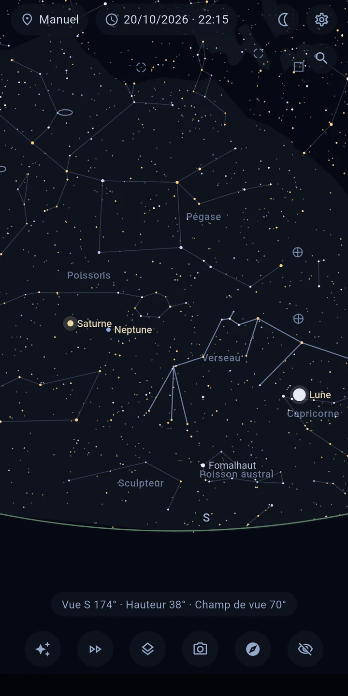
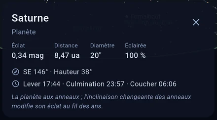
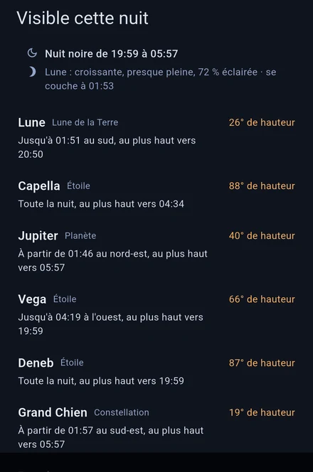
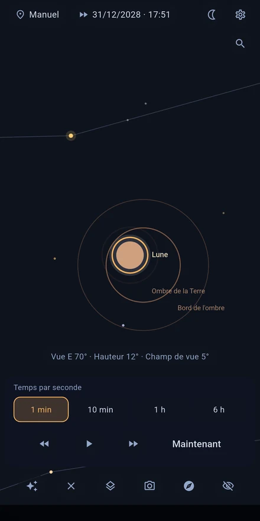

Astira – Carte du ciel
Reconnais les constellations, les planètes et la Lune, sans internet.
Pointe ton téléphone vers le ciel — Astira te montre en direct ce que tu regardes : étoiles et constellations, planètes, Lune et galaxies lointaines. Calculés précisément pour ton lieu et l'instant, entièrement sans internet.
LE CIEL SUIT TON MOUVEMENT
En mode direct, le capteur d'orientation pilote la vue : déplace l'appareil et la carte suit — en douceur, avec la correction de la déclinaison magnétique de ta position. Tu préfères la manière classique ? Balaie et pince pour zoomer.

TOUCHE POUR COMPRENDRE
Touche un objet pour en savoir plus sans quitter la vue : nom propre et désignation de catalogue, distance, éclat, type spectral et température, et pour de nombreuses étoiles brillantes aussi le rayon et la masse — avec les heures de lever, de culmination et de coucher pour ton lieu.

TROUVE CE QUE TU CHERCHES
Cherche étoiles, planètes, constellations et objets du ciel profond par nom ou numéro de catalogue — M 31, NGC 224 et Andromède mènent au même objet. Hors de l'écran, une flèche indique le chemin et l'angle. Et si tu ne sais pas quoi chercher : « Visible cette nuit » liste les objets les plus intéressants de la nuit, avec hauteur et fenêtre d'observation. Une entrée en astronomie sans connaissances préalables, et au premier lancement une courte visite te guide dans l'application.

CE QUE TU VERRAS
- Environ 8 900 étoiles — toutes celles visibles à l'œil nu (jusqu'à la magnitude 6,5)
- Le Soleil, la Lune (avec sa phase) et toutes les planètes, avec leur visibilité et l'état du crépuscule
- Les 109 objets Messier ainsi que d'autres galaxies, nébuleuses et amas brillants
- Des couches activables : constellations, Voie lactée, système solaire, écliptique, trajectoires orbitales (±30 jours)
- Position par GPS ou saisie manuelle, moment librement réglable — vois dès aujourd'hui le ciel de demain
LE TEMPS EN ACCÉLÉRÉ
L'accéléré te montre les étoiles traverser le ciel, dans les deux sens. Vois un objet se coucher, parcours une nuit, suis la Lune au fil de ses phases.
ÉCLIPSES DE SOLEIL ET DE LUNE
Astira calcule quelles éclipses sont visibles depuis chez toi : quand elles commencent et quelle part est couverte. Une touche, et tu la suis en accéléré.

ALIGNEMENT PRÉCIS
La carte est légèrement décalée ? Cela arrive à toutes les boussoles de téléphone. Vise une étoile que tu connais, touche-la, appuie sur « Aligner ici » — c'est fait. La carte colle à ton ciel au lieu de te laisser deviner.
LE CIEL AU-DESSUS DE TON ENVIRONNEMENT
Active l'image de la caméra et la carte se pose sur ce qui est réellement devant toi : l'horizon, les arbres, les toits. Tu pointes simplement l'appareil là où tu cherches. L'image est seulement affichée : jamais capturée, enregistrée ni transmise.
FAIT POUR OBSERVER
- Le mode nuit en rouge profond préserve ton adaptation à l'obscurité
- L'écran reste allumé pendant que tu observes
- Étoiles aux couleurs réalistes (selon l'indice de couleur) et taille selon l'éclat
- Limite de magnitude réglable, distances en années-lumière ou en parsecs
ENTIÈREMENT HORS LIGNE — ET PRIVÉ
Astira n'a pas besoin d'internet : tous les calculs se font sur ton appareil. L'application n'a pas d'autorisation internet, n'affiche pas de publicité et ne contient aucun suivi. Ta position sert uniquement sur l'appareil au calcul de la vue du ciel — parfait aussi pour les sites d'observation loin de toute ville (et de tout réseau).
PRÉCISION
Le calcul des positions suit les méthodes standard de la littérature astronomique — les positions des planètes s'écartent de moins d'une minute d'arc de la référence du JPL.
SOURCES DES DONNÉES
Catalogue d'étoiles : base HYG (CC BY-SA) · Objets du ciel profond : OpenNGC (CC BY-SA) · Détails dans l'écran des crédits de l'application.
Remarque : la précision d'une boussole de téléphone est typiquement de ±5–10°. Avec le calibrage guidé et l'alignement sur une étoile, tu identifieras malgré tout chaque objet de façon fiable.